DotA历史回顾导读
DotA Allstars是一个重视对抗的5V5角色扮演游戏。游戏目标是在队友的合作下，摧毁对方的基地；或是有一方全部退出游戏。游戏中也有由人工智能所控制的单位（Roshan、小兵、防御塔）。
DotA地图最早是由作者Eul创作的源自星际争霸的一个RPG对战地图，后来地图移植到了魔兽争霸3上并陆续有不同的作者更新DotA地图，他们各自添加了不同的游戏元素。随后史蒂夫·费克（昵称“Guinsoo”）整理了这些地图制作了DotA Allstars。现在DotA Allstars是世界上最流行的魔兽RPG地图。
6.01版本后Guinsoo停止了开发，冰蛙（IceFrog）从版本6.02开始接手，直到现在他仍在为地图工作。
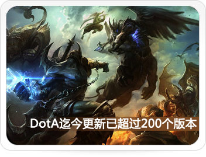
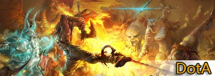
推荐指数：★★★★ ★游戏诞生日期：2003年对应平台：局域网、各游戏平台游戏优势：历史悠久、玩家众多
Dota简介
DotA是Defense of the Ancients的简称，是基于魔兽争霸3的自定义地图，其以独特的10人同时连线游戏进行5v5对抗的游戏模式风靡全球，是所有DotA类游戏（包括英雄联盟、梦三国、天翼决、HoN等）的始祖。DotA是目前唯一被暴雪公司官方认可的魔兽争霸的RPG地图。
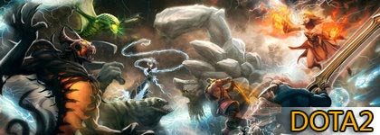
推荐指数：★★★★ ★游戏诞生日期：2011年对应平台：Steam、未来国服游戏优势：DotA正统续作、功能完善
Dota2简介
DDotA2是脱离了War3引擎，由DotA1的地图作者IceFrog联手Valve开发的MOBA类游戏。DOTA2继承DotA1所有优势，并且添加新的实用功能。从某种程度上来说，DOTA2是现有DotA的技术升级版。目前DotA2内测阶段全球玩家已达300万，国服已确定由完美世界代理。
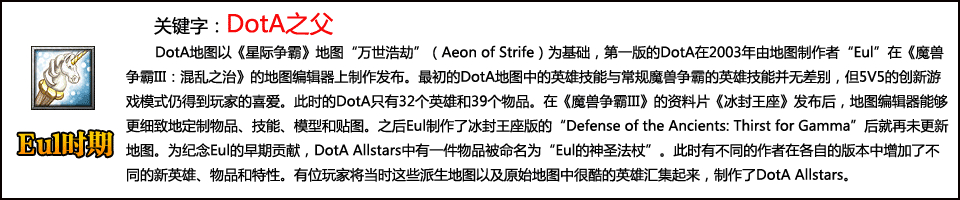
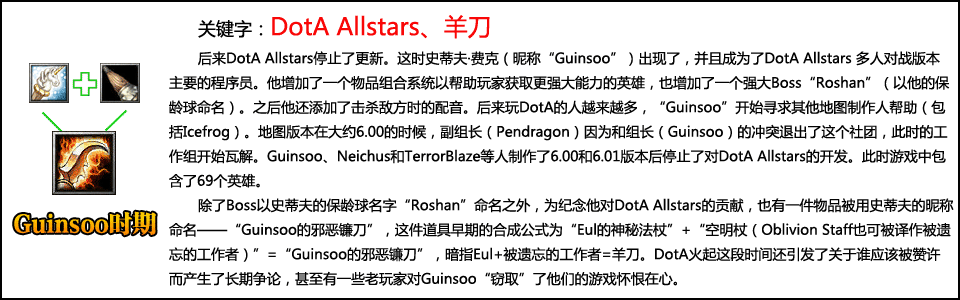
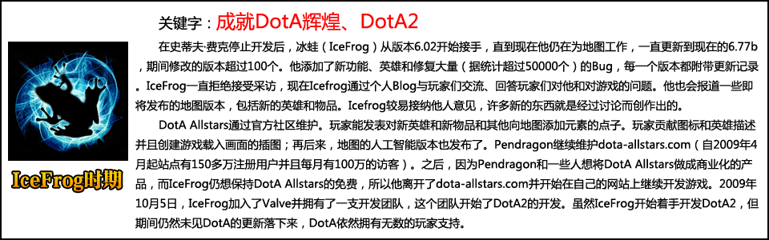
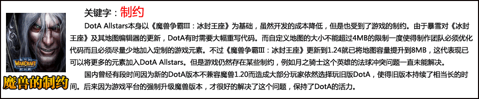
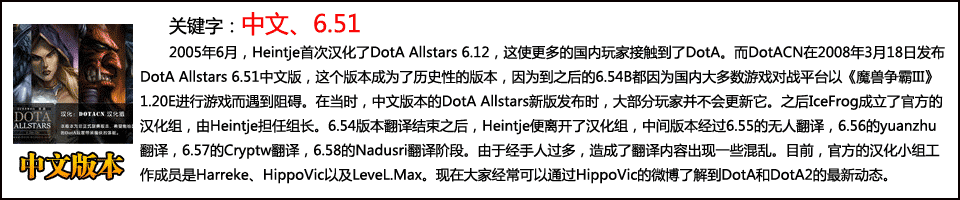
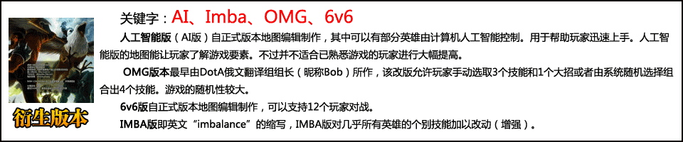
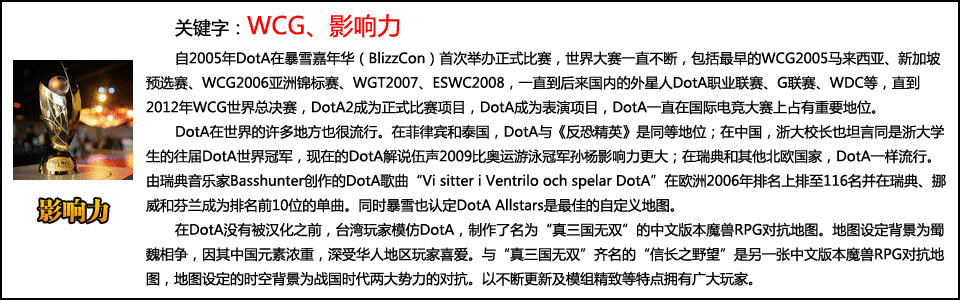
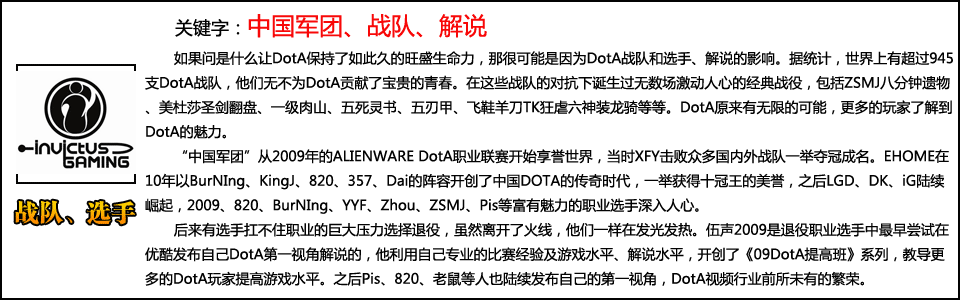
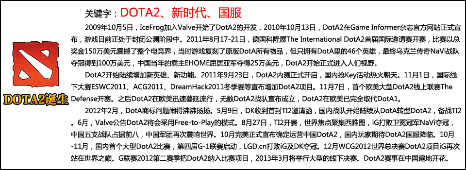